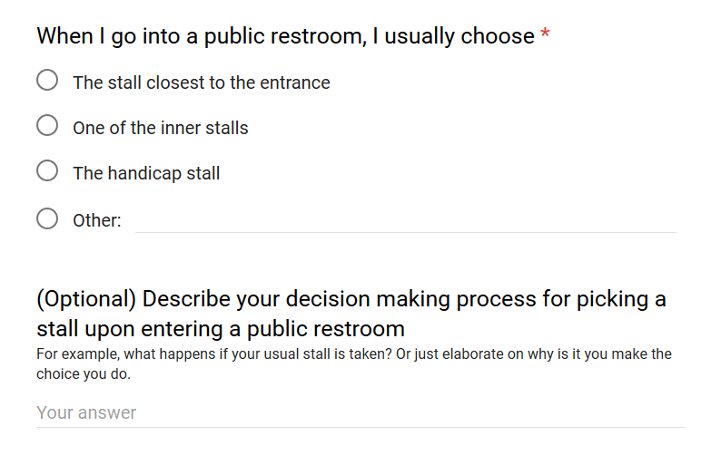
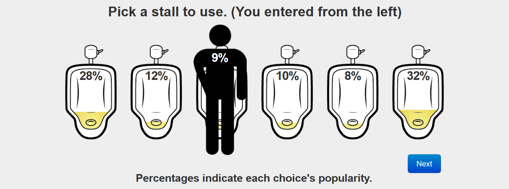

The questions no one cares about, but everyone's wondering
The question was:
Raw data available here.
This question is special. Partly because each question is its own unique individual and they're all special little snowflakes to me, but also because this is the first question in this series that originated as a community suggestion! Ruby Kramer wanted to find out exactly which stall do people tend to choose in public restrooms. Perhaps this knowledge will help her feel a sense of solidarity with her fellow Ole's in a decision that we're all confronted with every day (or perhaps she just wanted to avoid other people?) In any case, I accepted the challenge.
According to science the middle choice is the most popular option. So it was surprising that that wasn't the case for our community.
The middle choice is the most popular, but the stall closest to the entrance is almost just as popular, and the handicap stall isn't too far behind. "Other" were some choices like the one "closest to the sink" or just "the cleanest looking stall".
In the paper they found that 60% of people use the middle stall. In our data it looks like they're all equally likely (with the handicap stall being used less just because people feel bad using it).
This is very interesting to me because this is another case where people are trying to predict the most popular choice (which I touched on in last week's question). Most people are trying to go to the stall used least often, so if it becomes common knowledge that the middle one is the most popular, it will cease to be.
It would be very interesting to perform a study on how these studies change people's choices, and if this changes over time. The way the original study obtained this data was by conspiring with the custodian to count toilet paper usage, which would correlate with stall usage. (So if you're a SO/AN major looking for the next big idea, you're welcome).
Another relevant piece of research I wanted to share, this one brought to my attention by Visiting Assistant Professor of Norwegian Kyle Korynta, is Urinal Man. This is an ongoing study collecting peoples' responses in this cute little simulator.
According to the website, they've collected 2,780,847 data points to date! Although that the website is full of ads suggests to me that it's outgrown its research utility and is now more of a fun side project.
Now Ruby wasn't just interested in learning what choices people made, she also wanted to know how many people really put any sort of thought into this, which is what I tried to gather from the second question. Out of a total of 129 answers there were 60 responses to the optional question.
While there are some that couldn't justify their choices, the vast majority definitely put a lot of thought into which stall they pick. The top 3 reasons for making these choices seem to be:
Here are some of my favorites:
I look at the reflection of the floor by the toilet and choose the stall with less pee stains on the floor
This sounds like a really handy tip!
In the dorm bathroom I ALWAYS choose the second stall, but I couldn't tell you why. I suppose it's a matter of comfort like how people tend to choose the same seats in a classroom. Furthermore, something about the first stall is just averse to me, but I also don't pick the handicap stall unless necessary.
It actually really bothers me when people sit in the same seat all semester, but that's another story for another day.
Minimum walking distance, consistency. If it's taken then I go to the next available stall. I don't really think that hard about it, but sometimes if I frequent a particular public restroom I'll try and exclusively use the same stall every time. It just makes me feel more comfortable, I guess? Because it's "my" stall.
I admire this strong sense of ownership.
And finally:
depends on my mood tbh
I would love to interview this person. I cannot in my wildest imagination fathom what sort of mood would motivate someone to pick the middle stall over the edge. Does it have to do with how much of a hurry you're in? Do you pick the handicap stall when you're happy? Is it about the time of day?
We may never know.
– Omar